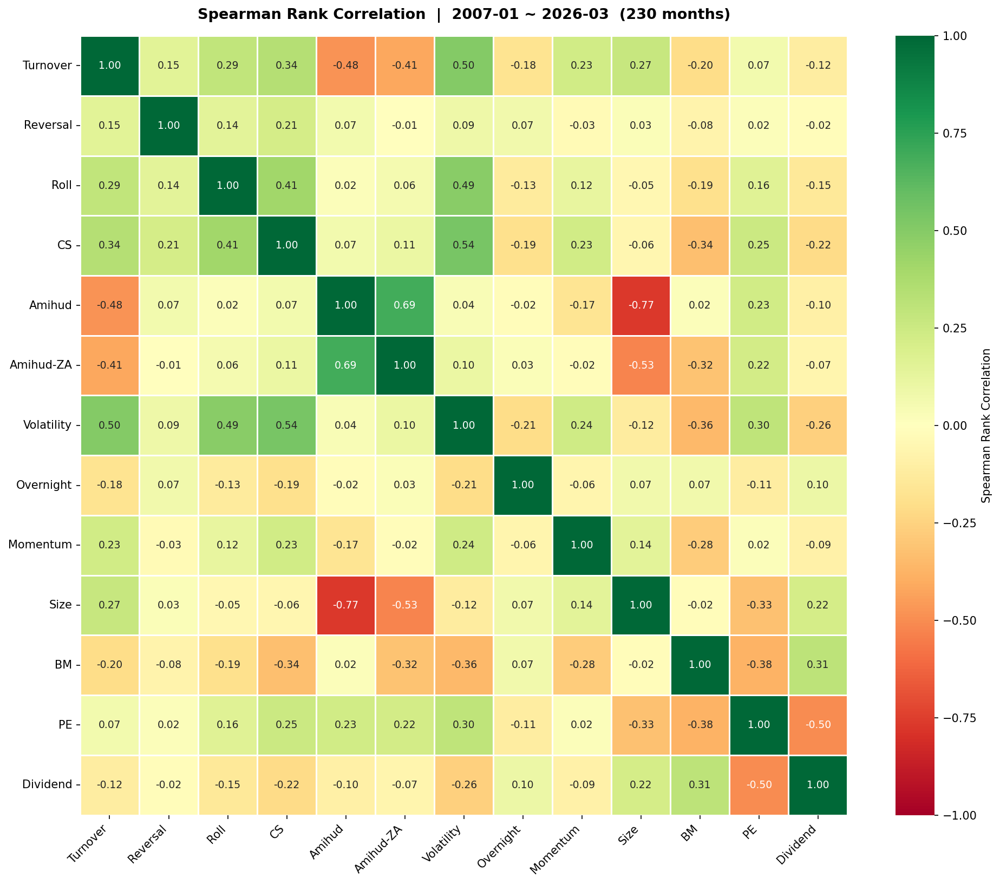

A 股量化因子回测研究报告
一、研究框架与方法
微观结构因子（7）
换手率、短期反转、Roll 价差、CS 价差、Amihud 非流动性、短期波动率、隔夜收益率
基本面因子（3）
Size（总市值）、BM（账面市值比）、PE1（动态市盈率）
股票池过滤
剔除 ST 股、停牌股、上市不足 60 日次新股，动态月末调仓
IC / ICIR 检验
Spearman Rank IC，ICIR = IC均值 / IC标准差（类比因子 Sharpe）
行业基准：> 0.5 良好，> 1.0 优秀
多因子合成流程
方向对齐
负向因子 × (−1)，统一高得分 = 预期高收益
Lowdin 正交化（可选）
对称正交化消除因子间共线性
S = F'F，F̃ = F · S−½
滚动 ICIR 权重
12 月滚动窗口，负 IR 截断为 0，权重归一化；shift(1) 消除前瞻偏差
加权合成 → 分组
向量化加权求和，NaN 权重自动归零，输出综合得分后五分组回测
二、单因子回测结果
回测区间 2007 年 01 月 – 2026 年 03 月，A 股全市场，五分位分组（231 个月，6077 只股票）。LS 收益已按因子方向对齐，按 |ICIR| 降序排列。
2.1 微观结构因子
| 因子 | IC 均值 | ICIR | G1 年化 | G5 年化 | LS 年化 | LS Sharpe | LS 最大回撤 | |IC|>0.02 | 评级 |
|---|---|---|---|---|---|---|---|---|---|
| turnover_20（换手率） | −0.097 | −0.715 | +23.9% | −1.2% | +20.0% | 1.36 | −98.8% | 90.9% | ★★★ 强 |
| roll_spread（Roll 价差） | −0.053 | −0.490 | +13.8% | +4.5% | +7.8% | 0.71 | −84.8% | 87.8% | ★★★ |
| reversal_20（短期反转） | −0.064 | −0.450 | +15.5% | −0.2% | +15.2% | 0.99 | −96.3% | 88.3% | ★★★ |
| cs_spread（CS 价差） | −0.056 | −0.447 | +14.7% | +5.0% | +7.7% | 0.60 | −82.1% | 87.0% | ★★★ |
| amihud（Amihud 非流动性） | +0.059 | +0.387 | +3.1% | +24.3% | +20.3% | 1.20 | −24.9% | 90.4% | ★★★ 最稳健 |
| volatility_30（短期波动率） | −0.066 | −0.383 | +13.9% | +3.7% | +7.7% | 0.44 | −82.1% | 89.6% | ★★ |
| overnight_ret（隔夜收益率） | +0.017 | +0.222 | +7.1% | +10.9% | +2.7% | 0.33 | −29.8% | 83.5% | ★ 弱 |
| momentum_12_1（中期动量） | −0.020 | −0.128 | +11.5% | +7.9% | +4.6% | 0.31 | −61.2% | 90.4% | ✗ A股失效 |
* amihud LS 最大回撤仅 −24.9%，是全部因子中回撤最小的，体现流动性溢价的持续性。momentum_12_1 不纳入多因子合成。
2.2 基本面因子
| 因子 | 定义 | IC 均值 | ICIR | G1 年化 | G5 年化 | LS 年化 | LS Sharpe | LS 最大回撤 | 评级 |
|---|---|---|---|---|---|---|---|---|---|
| size（总市值） | log(market_value) | −0.066 | −0.355 | +28.0% | +3.9% | +22.4% | 1.16 | −99.1% | ★★★ 强 |
| bm（账面市值比） | log(1/PB)，Fama-French HML | +0.055 | +0.334 | +4.6% | +16.8% | +8.9% | 0.49 | −32.5% | ★★ |
| pe1（动态市盈率） | 总市值 / 最新季报净利润年化 | −0.046 | −0.298 | +18.1% | +7.1% | +8.9% | 0.55 | −86.3% | ★★ |
| pb（市净率） | 原始 PB | −0.055 | −0.333 | +16.6% | +4.6% | +11.1% | 0.62 | −88.3% | 二选一→bm |
| pe_ttm（市盈率 TTM） | 总市值 / 净利润 TTM（静态） | −0.037 | −0.241 | +10.7% | +3.8% | +5.9% | 0.37 | −70.9% | 二选一→pe1 |
| size2（流通市值） | log(neg_market_value) | −0.049 | −0.263 | +22.9% | +4.5% | +19.1% | 0.93 | −98.2% | 二选一→size |
| dividend_yield（股息率） | 近12月股息率 | +0.020 | +0.181 | +11.9% | −15.2% | +17.2% | 1.91 | −1.6% | ⚠ LS 异常 |
* dividend_yield LS Sharpe = 1.91 异常（65% 股票股息率低于均值，G1 大量零股息小市值股混入规模溢价），暂不纳入合成。灰色行为对照组，已选定版本以加粗行呈现。
三、因子截面相关性分析
基于 2007 年 01 月 – 2026 年 03 月，共 230 个月的月度截面 Spearman Rank 相关系数均值。

关键发现：
① amihud ↔ size：ρ = −0.770（最高非重复对）— 小市值股天然非流动性高，两者信息高度重叠；但经济含义不同（规模 vs 流动性溢价），保留两者，ICIR 加权自动平衡。
② amihud ↔ amihud_zero_adj：ρ = +0.694 — 未超 0.8 排除阈值，但 amihud（ICIR 0.387）更强，合成只用 amihud。
③ cs_spread / volatility_30 / turnover_20 相互中度正相关（ρ ≈ 0.50–0.54） — 均与市场高散户活跃度相关，合成时贡献部分重叠；但三者在不同市场状态下表现差异明显，保留多样性。
④ overnight_ret 与其他因子相关性均较低（|ρ| < 0.21），独立信号价值较高，支持纳入合成。
四、多因子合成打分模型结果
合成因子池：10 个因子（微观结构 7 + 基本面 3），方向对齐后等权或 ICIR 滚动加权合成。
4.1 合成因子池
| 类别 | 因子 | ICIR（单因子） | 方向 | 纳入理由 |
|---|---|---|---|---|
| 微观 | turnover_20 | −0.715 | 负向 ×(−1) | 最强因子，信号极稳定 |
| 微观 | reversal_20 | −0.450 | 负向 ×(−1) | 短期反转，与其他因子低相关 |
| 微观 | roll_spread | −0.490 | 负向 ×(−1) | Roll 价差，独立流动性信号 |
| 微观 | cs_spread | −0.447 | 负向 ×(−1) | CS 高低价价差，流动性维度 |
| 微观 | amihud | +0.387 | 正向 ×(+1) | Amihud 非流动性，LS 最大回撤最小 |
| 微观 | volatility_30 | −0.383 | 负向 ×(−1) | 低波动异象，低相关独立 alpha |
| 微观 | overnight_ret | +0.222 | 正向 ×(+1) | 信号较弱但与其他因子独立 |
| 基本面 | size | −0.355 | 负向 ×(−1) | 小市值溢价，A股最显著特征之一 |
| 基本面 | bm | +0.334 | 正向 ×(+1) | 账面市值比，Fama-French 价值因子 |
| 基本面 | pe1 | −0.298 | 负向 ×(−1) | 动态 PE，比静态 pe_ttm 更及时 |
4.2 合成回测结果对比
| 模式 | IC 均值 | ICIR | G1 年化 | G5 年化 | LS 年化 | LS Sharpe | LS 最大回撤 | 月度胜率 |
|---|---|---|---|---|---|---|---|---|
| 等权合成（Equal Weight） | +0.114 | 0.815 | −3.2% | +25.7% | +26.9% | 1.79 | −16.8% | 72.6% |
| ICIR 权重（Rolling 12M） | +0.112 | 0.798 | −2.4% | +25.8% | +26.3% | 1.69 | −18.2% | 71.3% |
多因子合成亮点：
① ICIR 从单因子最高 0.72（turnover_20）提升至合成后 0.82，多样化效应显著。
② LS Sharpe 1.79，远超任意单因子（次高为 turnover_20 的 1.36）。
③ LS 最大回撤压缩至 −16.8%（等权），单因子最优回撤为 amihud 的 −24.9%。
④ 月度胜率 72.6%，意味着每 4 个月有约 3 个月多空组合为正。
⑤ 等权版本（ICIR 0.815）小幅优于 ICIR 权重版（0.798），说明 12 个月窗口内各因子 IC 相对稳定，动态权重的额外复杂度并未带来显著提升。
4.3 ICIR 权重合成 — 最新期因子权重（2026-03）
| 因子 | 权重 | 类别 |
|---|---|---|
| turnover_20 | 18.52% | 微观 |
| volatility_30 | 12.40% | 微观 |
| bm | 12.09% | 基本面 |
| overnight_ret | 10.87% | 微观 |
| cs_spread | 8.96% | 微观 |
| size | 8.95% | 基本面 |
| amihud | 7.98% | 微观 |
| roll_spread | 7.96% | 微观 |
| pe1 | 6.26% | 基本面 |
| reversal_20 | 6.01% | 微观 |
4.4 多因子合成净值曲线


五、主要结论与 A 股市场特征
- 换手率（turnover_20）是 A 股最强单因子（ICIR = −0.715），低换手率股票筹码稳定、散户炒作少，持续获取超额收益。
- Amihud 非流动性是回撤最小的因子（LS 最大回撤仅 −24.9%），流动性溢价在 A 股持续稳定。
- A 股流动性因子方向异常：Amihud、CS Spread、Roll Spread 均呈"流动性差 → 收益高"，与传统理论相同但程度更强，反映 A 股散户主导定价特征。
- 动量因子（momentum_12_1）失效（ICIR = −0.128），A 股散户追涨杀跌导致强势股后续反转而非延续，与海外市场相反。
- 小市值溢价（size）是 A 股最显著的基本面特征，G1（小市值）年化 +28.0%，与欧美市场相比规模效应更为极端。
- 价值因子（bm/pe1）在 A 股 2007–2026 均有效，但受熊市期间价值陷阱影响，回撤较大。
- 动态 PE（pe1）优于静态 PE TTM，更及时的盈利信息带来更高 ICIR（−0.298 vs −0.241）。
- 股息率因子异常：LS Sharpe 1.91 远高于 ICIR 0.181，实际是 G1（零股息小盘成长股）混入规模溢价所致，而非纯股息信号。
- 10 因子合成 ICIR 达 0.82，超过单因子最高值 0.72，多样化效应（因子相关性低）是主要贡献来源。
- 等权合成与 ICIR 动态加权结果接近，说明各因子 IC 在样本期内相对稳定，等权是合理基准。
- 基本面因子（size/bm/pe1）的加入显著提升了多空组合的覆盖广度，但同时因 size↔amihud 高相关（ρ = −0.770）带来一定冗余，后续可通过正交化进一步优化。
附录：各因子分组净值曲线
微观结构因子


基本面因子


对照组：中性化版本